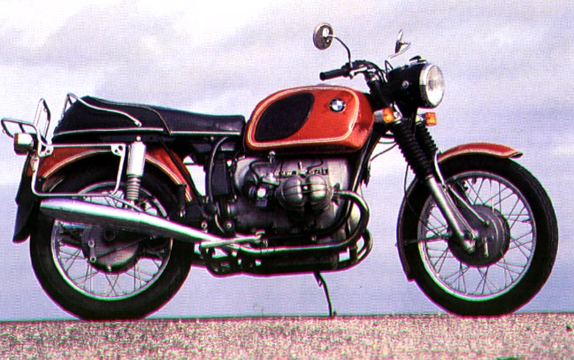
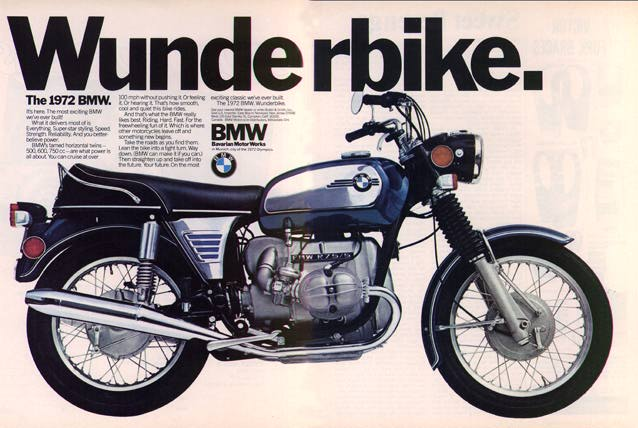

 In 1970 and 1971, BMW motorcycles had a 6.3 gallon fuel tank. This is the standard tank. This tank was available by special order in 1972. Many 1973 /5s had it as well. The 1970 and 1971 gas cap hinges from the front of the fuel tank. The 1972 and 1973 gas cap hinges from the back. In mid-1973, the standard tank had the cut-out for the brake master cylinder that would later appear on the /6.The black thing on the fuel tank is a large rubber pad. All standard tanks had these. When reattaching one of these to a painted fuel tank, 3m Super Weatherstrip (black) adhesive works well. This automotive type of adhesive is available at most auto parts stores. Photo is from BMW's archives. According to Phil Marx, slot blade screws affix the roundel to the fuel tank for 1970 and 1971.
In 1972, most motorcycles that BMW exported to the United States came with a fuel tank of less than 4.5 gallons. The chrome panels mounted, as seen below in this advertisement, were standard in the U.S. Notice the lack of pinstriping around the chrome panel. Notice the chrome battery cover? That was also a feature for the 1972 model. These tanks were also available in Europe. The chrome paneled tanks were called "toasters."
 This tank was not well received in the US market. Many motorcyclists thought the chrome panels were ugly. It held less fuel than the standard 6-gallon tank. Do not estimate a /5's year of manufacture by the fuel tank. These were frequently swapped for six-gallon tanks, and frequently on the dealers' showrooms. Also, some 1973 models were exported with the toaster tank. Dealers sent many toaster tanks, complete with toaster panels, to the scrapyard.
In 1972, the 6-gallon standard tank was available by special order for an additional $25. Small rubber pads were available to replace the chrome fuel tank panels, but only by special order from the dealer. Philips head screws hold roundel on the fuel tank. Advertisement scanned from an old copy of "Cycle" magazine.
Then there was 1973, the year of great confusion for restorers. Early 1973 models had chrome panels and the fuel tanks had pinstripes. Also in 1973, these rubber pads were available, and were supplied on the small tank after they stopped putting chrome panels on the fuel tanks. These pads were also available earlier by special order. It is the same fuel tank as the Toaster tank, only instead of chrome panels, it had a rubber pad. Indentations on the black pad fit over the prongs that support the toaster panel. Also in 1973, the 6-gallon tank was available as an option, for about $25. Click on the photos for larger views.
This green tank is a Police tank. Notice that it looks very similar to the 6-gallon tank? It even has the same large rubber pad.But on top, there is a lid. And inside that lid is a carrying place. The black one is police tank with a radio still in place. Click on the photos to see a larger view. Photo suppled by Phactory Phil Rose.
{kind=link}
{kind=link}
{kind=link}
{kind=link}
{kind=link}
{kind=link}